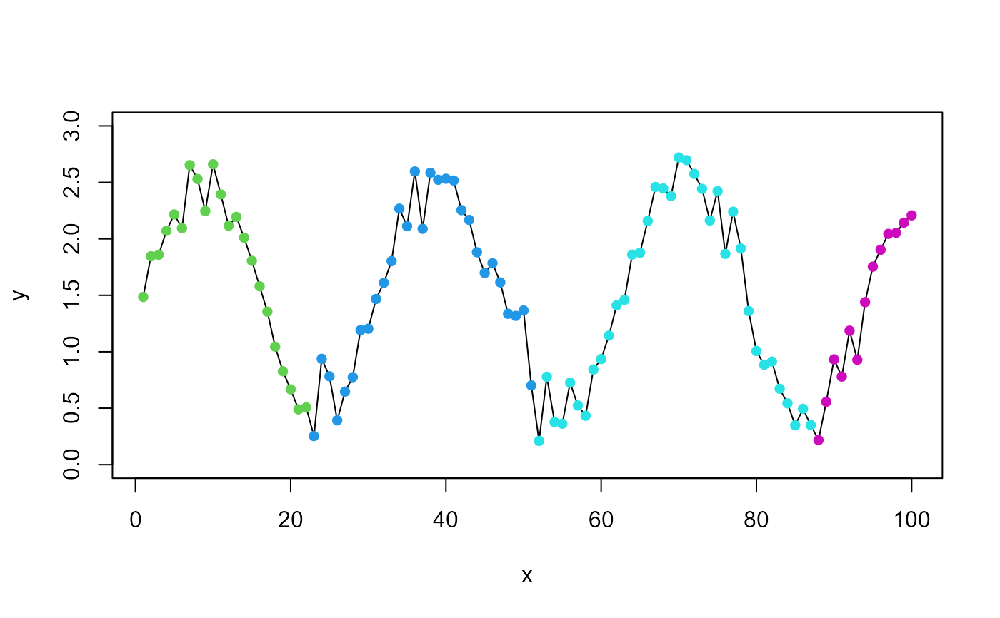

peakwindow.RdThis function identifies peaks in multimodal empirical density functions or in time series and helps to identify the time window of the first maximum according to a given heuristics.
peakwindow( x, y = NULL, xstart = 0, xend = max(x), minpeak = 0.1, mincut = 0.382 )
| x | x coordinate of a set of points. |
|---|---|
| y | y coordinate of a set of points. Alternatively, a single argument x can be provided. |
| xstart | start before the maximum value of the searched peak (this is a ``weak'' limit) |
| xend | maximum of the end of the searched peak (this is a ``hard'' maximum) |
| minpeak | minimum value of the total maximum which is regarded as peak |
| mincut | minimum relative height of a pit compared to the lower of the two neighbouring maxima at which these maxima are regarded as separate peaks (default value is derived from golden section) |
A list with the following elements:
a data frame with the characteristics (index, xleft, x, xright and y) of all identified peaks,
index of the maximum value of the ``specified'' peak,
x-value of the maximum of the ``specified'' peak,
indices (data window) of all data belonging to the ``specified'' peak,
x-values (time window) of all data belonging to the ``specified'' peak,
corresponding y-values of all data belonging to the ``specified'' peak,
vector with peak-id-numbers for all data.
## generate test data with 3 peaks set.seed(123) x <- seq(0, 360, length = 20) y <- abs(rnorm(20, mean = 1, sd = 0.1)) y[5:10] <- c(2, 4, 7, 3, 4, 2) y <- c(y, 0.8 * y, 1.2 * y) x <- seq(0, 360, along = y) y[6] <- y[7] # test case with 2 neighbouring equal points ## plot the test data plot(x, y, type="b")## identify the first peak peaks <- peakwindow(x, y) ind <- peaks$smd.indices lines(x[ind], y[ind], col="red", lwd=2)## some more options ... peaks <- peakwindow(x, y, xstart=150, mincut = 0.455) ind <- peaks$first.indices lines(x[ind], y[ind], col = "blue")## work with indices only peaks <- peakwindow(y) ## test case with disturbed sinus x<- 1:100 y <- sin(x/5) +1.5 + rnorm(x, sd = 0.2) peaks <- peakwindow(x, y) plot(x, y, type = "l", ylim = c(0, 3))#> $peaks #> index xleft x xright y #> 1 11 1 11 21 11 #> #> $first.max.index #> [1] 11 #> #> $first.max.x #> [1] 11 #> #> $first.indices #> [1] 1 2 3 4 5 6 7 8 9 10 11 12 13 14 15 16 17 18 19 20 21 #> #> $first.x #> [1] 1 2 3 4 5 6 7 8 9 10 11 12 13 14 15 16 17 18 19 20 21 #> #> $first.y #> [1] 1 2 3 4 5 6 7 8 9 10 11 10 9 8 7 6 5 4 3 2 1 #> #> $peakid #> [1] 1 1 1 1 1 1 1 1 1 1 1 1 1 1 1 1 1 1 1 1 1 #> #> attr(,"class") #> [1] "list" "abrPeakwindow"## error handling test case: no turnpoints # yy <- rep(1, length(x)) # peakwindow(x, yy)